Kart A Hélice télécommandé
Technologie utilisée: ARES, ISIS, Arduino, C, knowledge gained during 1st year in GEII
Plus de détails techniques ont été ajoutés, lisez-les si cela vous intéresse ! Sinon, vous pouvez revenir à la « Version Simplifiée » à tout moment !
Introduction
Au cours de nos études dans le cadre du cours SAE (Situation d'Apprentissage et d'Évaluation), nous avons travaillé sur un kart à hélice télécommandé, plus précisément sur deux cartes électroniques : l'émetteur et le récepteur, au sein d'une équipe de 8 personnes. Nous devions concevoir un émetteur capable d'envoyer des signaux indiquant la direction et la vitesse du kart, ainsi qu'un récepteur capable de recevoir ces signaux et d'appliquer les changements aux moteurs connectés pour modifier la direction et la vitesse.
Pour mener à bien cette tâche, nous avons dû analyser les fiches techniques des composants, concevoir le schéma électronique, produire un prototype et le vérifier en effectuant plusieurs tests. Pour cela, nous disposions de 60 heures et d'un budget total inférieur à 160 euros.
Répartition du travail
Nous avions deux cartes à concevoir et huit personnes dans l'équipe. Nous nous sommes donc divisés en deux sous-équipes de quatre, baptisées « Rouge » et « Bleue », la première chargée du récepteur et la seconde de l'émetteur. Au sein de ces sous-équipes, nous nous sommes répartis en binômes, chacun avec ses tâches, travaillant sur deux modules parmi les quatre : énergie, acquisition d'informations, traitement d'informations et actions.
Avec mon coéquipier, j'ai travaillé sur l'émetteur lors de l'acquisition et de l'action.
Nous avons réalisé la conception électronique, mais nous avons également dû mettre en place une architecture informatique afin de programmer les cartes. Après la production du prototype et sa programmation, nous avons dû vérifier le fonctionnement des cartes. À ce stade, nous avons échangé les cartes afin de vérifier le prototype de l'autre sous-équipe.
Description du projet
Notre tâche consiste à concevoir deux cartes pour kart. Pour la carte émettrice, nous avions les exigences suivantes :
- ● Autonomie minimale de 60 minutes
- ● Deux interfaces homme-machine pour contrôler les directions et la vitesse
- ● Bouton-poussoir pour klaxon
- ● Deux émetteurs infrarouges
- ● LED verte indiquant que la carte est sous tension
- ● Programmation : il fallait encoder les trames selon le protocole NEC.
L'accumulateur n'était pas censé être fixé sur la carte, il n'occupait donc aucune surface sur celle-ci.
Pour plus de détails, voici l'ensemble des exigences relatives à la carte émettrice :
- ● Dimensions : la carte doit avoir une largeur de 120 mm (±1 mm) et une longueur de 80 mm (±1 mm). Elle comporte des trous de montage de 3 mm (±0,5 mm) situés à chaque coin pour la fixer au reste des composants mécaniques de l'émetteur. Le centre de ces trous est situé à 5 mm (±0,5 mm) des bords du circuit imprimé.
- ● Logo : il doit également comporter le nom visible du département GEII de Bordeaux et le nom de l'équipe de conception.
Module d'énergie
- ● Il est impératif d'utiliser une batterie lithium-polymère 2S pour le fonctionnement. Cette batterie dispose d'une capacité qui garantit une autonomie de fonctionnement de l'émetteur d'au moins 60 minutes.
- ● La carte doit comporter un interrupteur permettant d'activer et de désactiver son circuit électronique.
Module d'acquisition d'informations
- ● L'émetteur comprend deux interfaces homme-machine qui contrôlent respectivement la puissance du moteur du kart et la direction des roues avant. Ces deux interfaces sont des potentiomètres rotatifs et/ou linéaires avec une tolérance de -/+1/32 de la tension d'alimentation de l'étage. Elles doivent être positionnées de manière ergonomique sur l'émetteur afin de faciliter le contrôle du kart.
- ● Klaxon : l'émetteur comprend un bouton-poussoir sur lequel l'utilisateur peut appuyer pour indiquer qu'il souhaite actionner le klaxon du kart.
Module de traitement d'informations
L'émetteur comprend un cœur de traitement numérique qui permet :
- ● acquérir des informations analogiques à partir des interfaces homme-machine,
- ● numériser ces informations analogiques et les transformer en informations numériques,
- ● encoder les données numériques du bouton-poussoir en 1 bit et la valeur numérique de l'équipe en 7 bits, afin de créer l'octet « adresse » du protocole NEC,
- ● encodez les données numériques relatives à la puissance du moteur en 3 bits et les données numériques relatives à la direction des roues en 5 bits, afin de créer l'octet « données » du protocole NEC.
- ● construire les trames de transmission conformément au protocole NEC en intégrant les octets « adresse » et « données » calculés précédemment.
De manière répétitive : l'émetteur transmet une trame NEC chaque fois que les données sont nouvelles (c'est-à-dire différentes de la trame précédente), sans autre délai que le délai inter-trame minimum imposé par le protocole NEC (période de transmission de trame de 108 ms). Si les données contenues dans des trames NEC consécutives sont identiques, la période de transmission des trames NEC est alors fixée à 333 ms. La tolérance pour ces deux périodes de transmission de trames est de -/+10 %.
Module d'action
Puissance : l'émetteur transmet les trames de protocole à l'aide d'un composant de transmission infrarouge. La puissance de transmission infrarouge maximale garantit que l'émetteur peut transmettre des signaux infrarouges décodables par le récepteur à une distance minimale de 10 m.
Pour garantir cette distance de transmission, il est nécessaire d'appliquer un courant de crête supérieur à 200 mA par LED à au moins deux LED infrarouges de 5 mm. Étant donné que l'émission d'une LED infrarouge est relativement directionnelle, les LED sont soigneusement placées et orientées sur le circuit imprimé de l'émetteur afin d'optimiser la distance et l'angle de transmission.
Indicateur : l'émetteur du kart comprend un indicateur lumineux (50 mcd -/+20 %) qui informe l'utilisateur que l'émetteur est sous tension.
Répartition des tâches
En tant que première équipe de la paire « Blue », nous avons travaillé sur les modules d'action et d'acquisition d'informations pour l'émetteur. Nous avons également élaboré le concept informatique de ces modules et procédé à leur vérification sur le prototype du récepteur. Nos tâches étaient donc les suivantes :
- ● Définition de l'architecture électronique pour les sections d'acquisition et d'action de l'émetteur
- ● Conception électronique des sections d'acquisition et d'action
- ● Rédaction des documents de conception préliminaire et détaillée
- ● Conception informatique (programme) et programmation du récepteur
- ● Vérification électronique du récepteur
- ● Rédaction des documents de vérification et de fabrication
Réalisation
Conception de cartes

Architecture synoptique du produit développé
La première étape consiste à choisir les composants pour le projet. Nous avons lu les fiches techniques des composants proposés et en avons sélectionné certains comme composants possibles pour le projet. Par exemple, pour l'acquisition d'informations, nous avons choisi deux potentiomètres linéaires PTA4543.
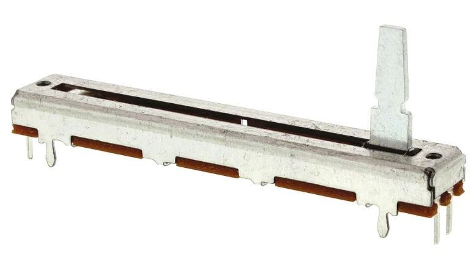
PTA4543
Nous devions choisir deux potentiomètres et avions le choix entre deux potentiomètres linéaires, deux potentiomètres rotatifs ou un de chaque. Comme vous pouvez le voir sur le schéma d'architecture, nous avons décidé d'opter pour deux potentiomètres identiques, car ils devraient permettre de contrôler plus facilement la direction et la vitesse.
Passons maintenant à la fonctionnalité : pour le potentiomètre de puissance (vitesse), si celui-ci (broche 2 du levier) est en position basse (broche 1), le moteur n'est pas alimenté (puissance nulle) ; si le levier est en position haute (broche 3), le moteur est alimenté à pleine puissance. Pour le potentiomètre de direction des roues, s'il (levier, broche 2) est au milieu, les roues ne tournent pas, s'il est à gauche (broche 1), les roues tournent à gauche, et s'il est à droite (broche 3), les roues tournent à droite.
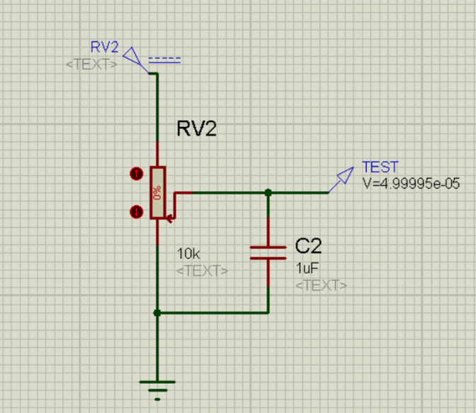
Schéma final du potentiomètre
La valeur de ces potentiomètres est de 10 kohms. Pour stabiliser la tension, nous devons ajouter un condensateur. Pour choisir la valeur du condensateur, nous avons utilisé la formule de fréquence de coupure :
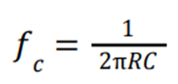
Notre fréquence est de 10 Hz, car les signaux seront envoyés toutes les 100 millisecondes. À partir de ces informations et des valeurs dont nous disposons, nous avons déterminé que la valeur du condensateur C = 1,591 μF. Nous avons donc choisi un condensateur de 1 μF ± 20 %.
Nous avons également effectué quelques simulations, en observant les résultats attendus. Par exemple, lorsque le potentiomètre était en position basse (0 %), nous obtenions 0 V en sortie. Ou si nous le placions en position 50 %, au milieu, nous obtenions 2,5 V en sortie.
Nous avons également choisi le MCDTS6-3K à bouton-poussoir simple.
Comme ce bouton serait connecté au microcontrôleur ATMEGA328P, nous devions l'inclure dans nos calculs pour la résistance.
Le microcontrôleur a sa propre tension Vil égale à 0,3*Vcc et un courant de fuite égal à 1 µΩ. Si la tension dépasse Vil, le microcontrôleur lira un « 1 » logique à partir de l'entrée. Nous devons donc nous assurer que la tension produite par le courant de fuite dans la résistance n'est pas supérieure à cette valeur.
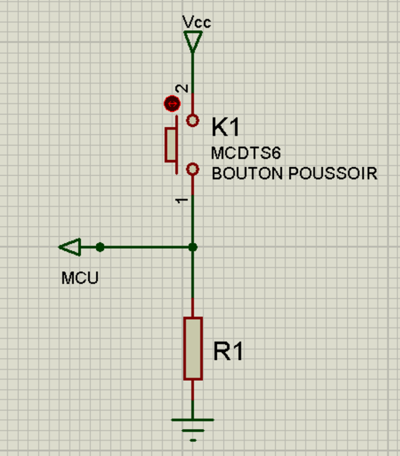
L'assemblage final du klaxon
En utilisant la formule que nous avons apprise pendant nos études à l'université, nous obtenons une valeur de 1,5 𝑀Ω. Afin d'éviter toute interférence avec la main humaine, nous avons choisi une résistance de 100 KΩ. Ainsi, si aucune pression n'est exercée sur le bouton, la sortie sera de 0 V, et si le bouton est enfoncé, elle sera de 5 V.
Pour la partie actions, nous avons choisi deux LED infrarouges TSAL6200 pour envoyer des signaux au récepteur. Une LED verte HLM-CM3A-Z10DD a été choisie pour indiquer que la carte est allumée.
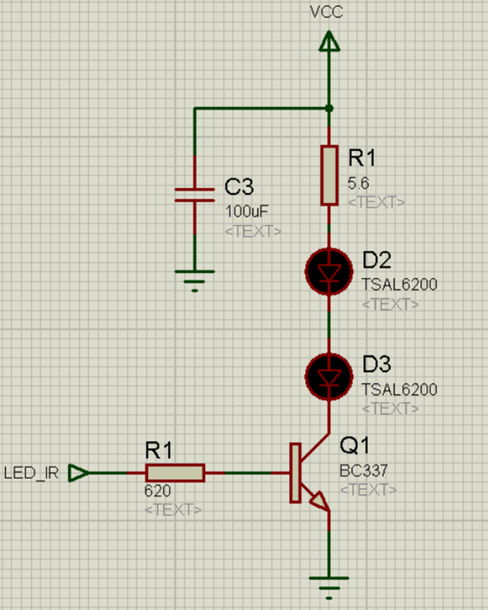
Schéma final de l'étage de puissance
Plus précisément, le TSAL6200 répondait aux exigences en termes de taille et son courant de crête était de 200 mA. Dans le même temps, le courant maximal fourni par le microcontrôleur choisi est de 40 mA (par broche d'E/S). Avec cette valeur, nous ne pouvons pas réellement allumer deux LED infrarouges.
Pour résoudre ce problème, il a été proposé d'utiliser un assemblage de transistors NPN avec des résistances (qui ont été placées en série avec les LED dans la section collecteur et une dans la sortie MCU qui va à la base).
Au cours de la phase de conception détaillée, nous avons choisi le transistor BC337. Les valeurs choisies pour la résistance sont indiquées sur le schéma ci-dessus. Nous avons également utilisé un condensateur pour stocker le courant. Outre les simulations réussies, nous avons recalculé le courant, qui devait être d'au moins 200 mA. Le résultat était de 250 mA, ce qui répondait aux exigences.
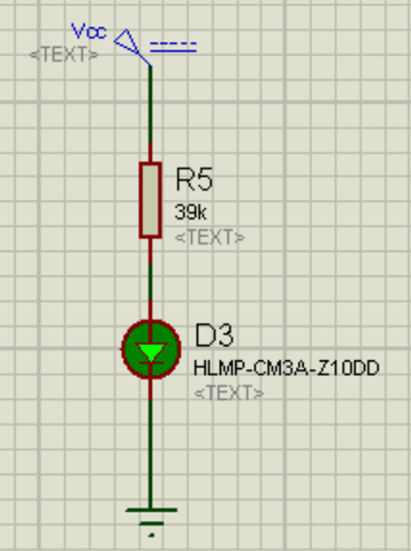
Assemblage de LED vertes
Pour la LED verte, nous avons décidé de ne pas la connecter au microcontrôleur et de procéder à un assemblage classique avec une résistance afin de la protéger et d'ajuster l'intensité lumineuse. En consultant la fiche technique de la LED, nous avons obtenu la valeur d'intensité pour 20 mA et recalculé les valeurs afin d'obtenir le courant pour 50 mcd.
Malheureusement, nous avons oublié de faire le calcul inverse pour l'intensité, ce qui nous a empêchés de détecter notre erreur avant la phase de vérification. Nous avons satisfait aux exigences et cette partie n'a donc pas été confirmée au final.
À la fin de la conception de la carte, nous avons obtenu le schéma suivant de la carte émettrice :
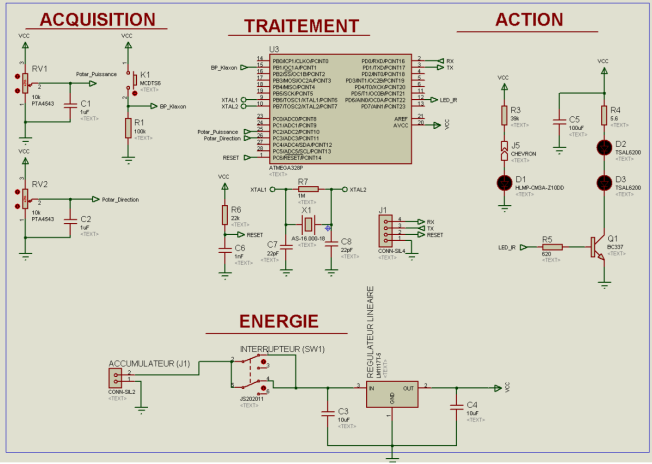
Schéma électrique détaillé du produit développé
Si vous souhaitez voir le schéma de disposition, veuillez cliquer sur le bouton « Détails techniques »
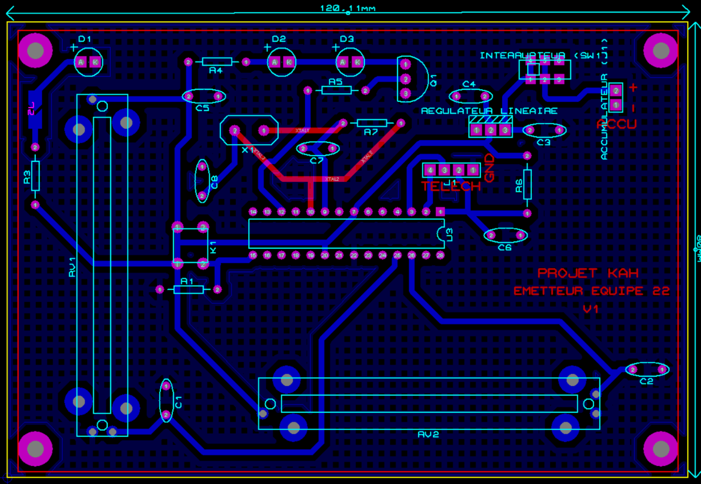
Schéma détaillé de l'agencement
Récepteur de programmation
Mon partenaire et moi avons travaillé sur la programmation des actions du récepteur et sur la partie acquisition.
Ils ont d'abord fabriqué des connecteurs pour les moteurs de direction et de puissance (vitesse) ; deux LED, l'une indiquant à l'utilisateur que le signal était bien reçu par le capteur et l'autre indiquant que la carte était allumée. Enfin, ils ont placé un buzzer sur la carte. Ensuite, ils ont installé un capteur qui recevrait les signaux envoyés.
Tout d'abord, nous avons réalisé un organigramme illustrant le fonctionnement du récepteur.
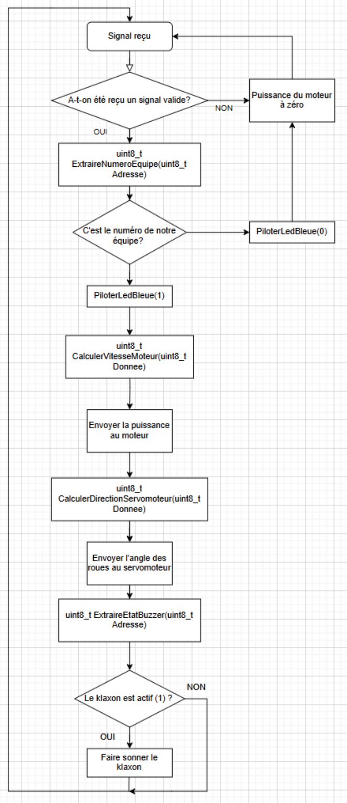
Algorithme de traitement du récepteur
Le diagramme a subi différentes modifications au cours du processus de programmation, alors que nous essayions de comprendre comment il devait fonctionner concrètement.
Toute la programmation a été réalisée dans Arduino.io à l'aide du langage C (Arduino). Nous avons utilisé des connecteurs intégrés et un câble de programmation spécial fourni par le professeur pour charger nos programmes dans le microprocesseur par la suite.
Plus tard, nous avons terminé la programmation avec les sections de code suivantes :
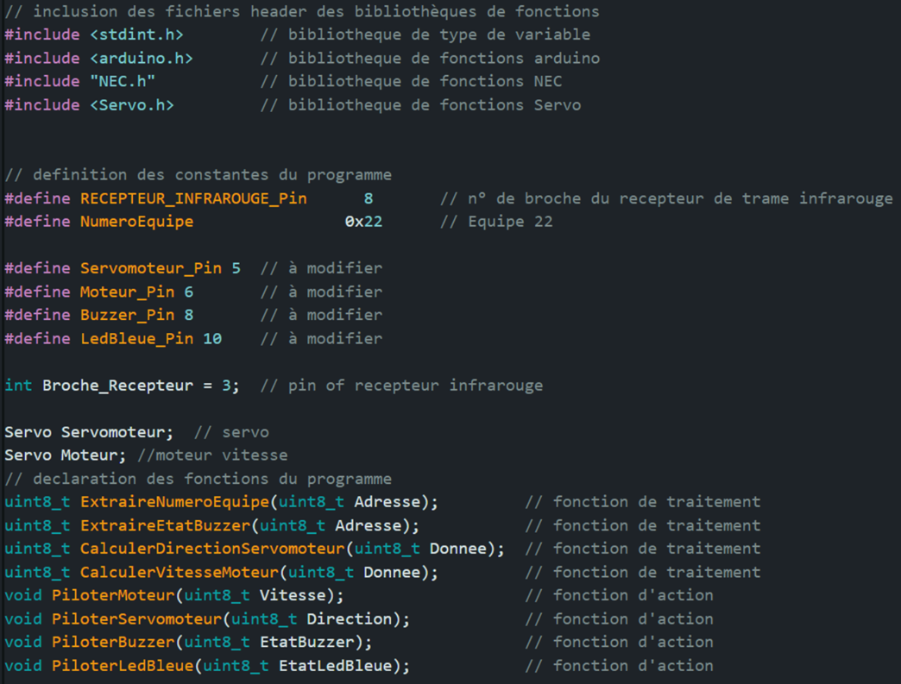
Initialisation des fichiers et déclaration des broches et des fonctions
Avant de coder, nous avons défini toutes les bibliothèques que nous utiliserons dans le projet, toutes les broches auxquelles les composants sont connectés, et nous avons également déclaré toutes les fonctions du programme.
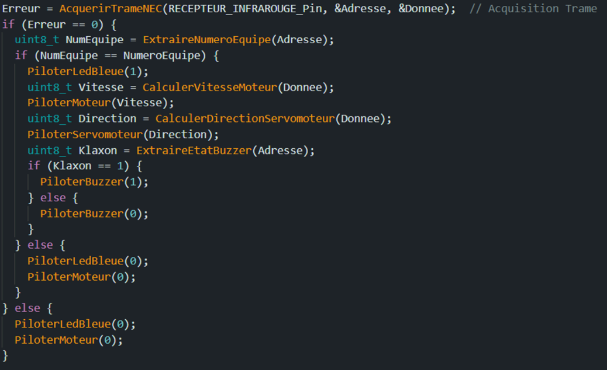
Fonction principale du code void loop()
Main est une partie acquisition. La fonction AcquireNECFrame() fait partie de la bibliothèque NEC et vérifie les erreurs dans la trame NEC reçue. Cette fonction récupère l'adresse et les données contenues dans la trame NEC.
Si l'erreur est nulle (aucune erreur dans la trame NEC), nous vérifions si le numéro d'équipe est correct. Si c'est le cas, nous allumons la LED bleue, indiquant que la trame NEC reçue est valide. Nous pouvons alors appeler les fonctions qui calculeront les valeurs à utiliser pour contrôler le kart. Ces fonctions se trouvent dans la section traitement (ci-dessous) et, pour envoyer des commandes au kart, nous utilisons les fonctions de la section action (ci-dessous).
Et enfin, la partie action. Vous pouvez voir ci-dessous un exemple de programmation du buzzer et d'un des moteurs :
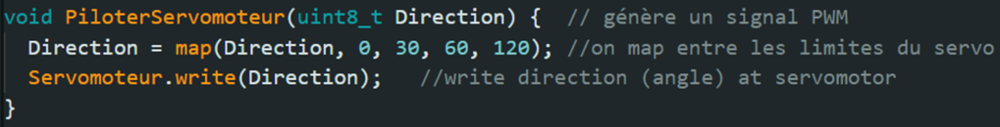
Code de fonction DriveServoMotor()
Cette fonction DriveServo() est dédiée à la génération d'un signal PWM que nous enverrons à un servomoteur à l'aide de la fonction .write() de la bibliothèque Servo, qui permet aux cartes de contrôler divers servomoteurs. Nous mappons également () la direction entre les limites du servomoteur. La fonction map() remappe un nombre d'une plage à une autre.
Le moteur électrique n'était en fait pas un servomoteur, mais nous l'avons programmé comme tel, en suivant une logique similaire.
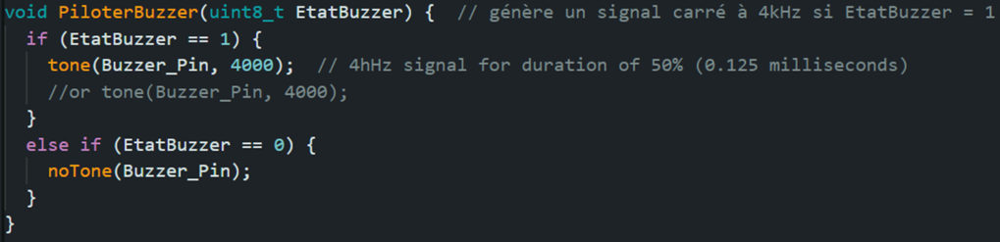
Code de fonction PiloterBuzzer()
La fonction PiloterBuzzer() est dédiée à la génération d'un signal carré de 4 kHz. La valeur d'entrée est soit 1, soit 0. Si la valeur d'état du buzzer est 1, le signal est généré pendant 0,125 milliseconde.
Pour ce faire, nous utilisons la fonction tone(), qui génère une onde carrée de la fréquence spécifiée sur une broche.
Si la valeur reçue est 0, nous ne faisons rien, donc nous ne générons pas de son. Pour ce faire, nous utilisons la fonction noTone(), qui arrête la génération d'une onde carrée déclenchée par la fonction tone(). Elle n'a aucun effet si aucun son n'est généré.
Prix
L'émetteur coûtait 13,11 euros et le récepteur 11,772 euros, ce qui correspondait à nos exigences en matière de prix.
Production d'un prototype
Le prototype a été fabriqué à partir de matériaux et de technologies fournis par l'université. Tous les composants et circuits imprimés, ainsi que les instruments nécessaires, tels que perceuses, pinces ou multimètres, nous ont été fournis par l'université et nous avons été accompagnés par des professeurs tout au long du processus.
Pour pouvoir produire une carte avec notre conception, nous avons exporté notre schéma depuis le logiciel ARES, depuis les côtés supérieur et inférieur, qui ont ensuite été imprimés sur le circuit imprimé.
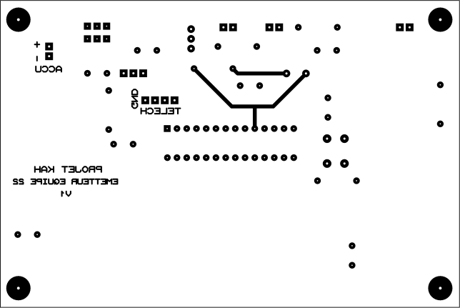
Haut de la carte émettrice (avec effet miroir)
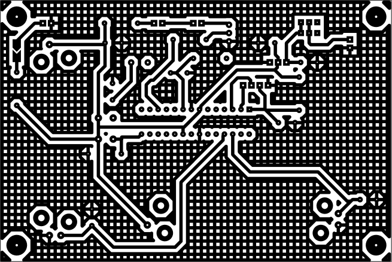
Bas de la carte émettrice (sans effet miroir)
Ce sont nos schémas principaux, qui ont été imprimés sur la carte. Les lignes représentent les connexions entre les composants, et tous les trous sont destinés à accueillir des composants. Nous avons également exporté les schémas pour le perçage des trous mentionnés et pour le placement des composants.
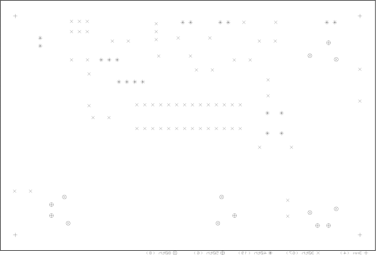
Plan de perçage de la carte émettrice
30th ≈ 0,8 mm ; 40 th ≈ 1 mm ; 50 th ≈ 1,2 mm ; 60 th ≈ 1,5 mm; 80th ≈ 2 mm. Les trous de 3 mm sont les trous de fixation.

Plan d'implantation de la carte émettrice
Certains composants étaient polarisés, nous avons donc prêté attention à leur sens de montage. Il s'agit notamment des deux LED infrarouges, de la LED qui indique l'état d'alimentation de la carte et de la batterie (qui ne se trouve pas sur la carte).
Tout le processus de production a été réalisé en suivant les instructions que nous avons reçues dans le cadre d'un de nos cours à l'université.
Vérification
Après avoir produit le prototype, nous devons le vérifier en effectuant quelques tests. Dans cette partie, nous avons vérifié les mêmes modules de la carte opposée, celle que nous avions programmée auparavant. Mon partenaire et moi avons donc vérifié les modules d'action et d'acquisition du récepteur.
Tout d'abord, nous avons testé la LED du récepteur. Pour cela, nous avions besoin d'un générateur pour mettre sous tension les cartes : récepteur et émetteur développés, ainsi qu'un oscilloscope.
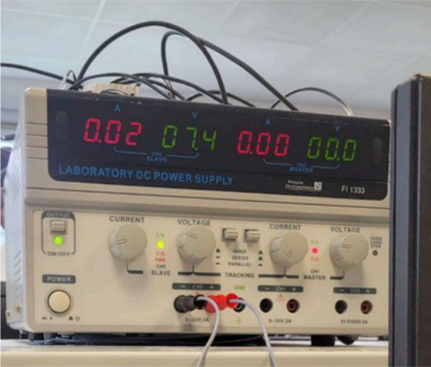
Générateur
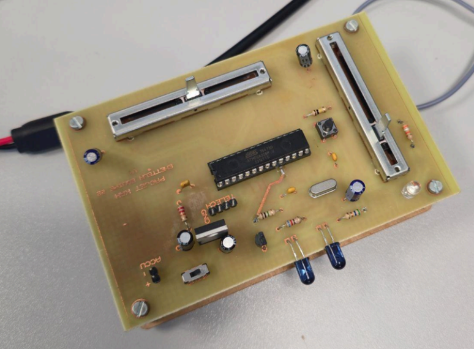
Carte émettrice
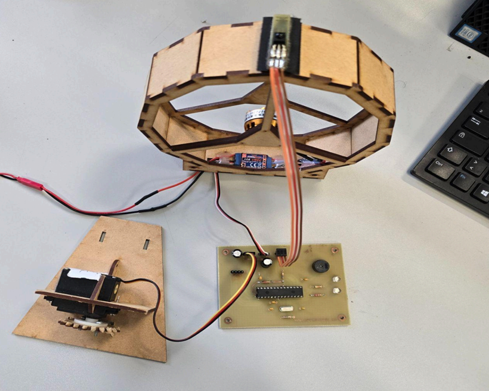
Carte réceptrice connectée aux moteurs
Ce que nous voulions, c'était voir les signaux reçus sur l'écran de l'oscilloscope. Nous avons renvoyé le même signal, en vérifiant d'abord le signal NEC envoyé par l'émetteur, puis celui reçu par le récepteur.
Pour cela, nous avons suivi la procédure suivante : au démarrage, nous avons alimenté le canal 2 du générateur avec 5 V et le canal 1 avec 7,4 V. Prenez les fils noir et rouge, connectez le fil noir à la masse et le fil rouge à Vcc. 5 V est attribué au récepteur et 7,4 V à l'émetteur.
Prenez les fils et connectez les cartes. Chaque carte est équipée d'un connecteur avec des repères de mise à la terre et de tension. Si la carte est alimentée, une LED verte doit s'allumer.
Allumez l'oscilloscope et connectez la sonde au canal 1. Déplacez-la vers la broche où le capteur infrarouge est connecté. Le numéro de cette broche est indiqué sur le schéma du récepteur.
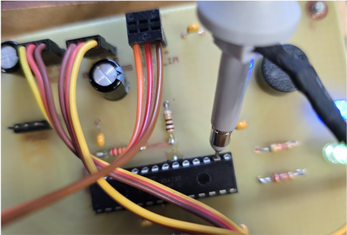
Vérification du signal sur la broche du récepteur infrarouge
Ici, nous pouvons voir le signal envoyé par l'émetteur :
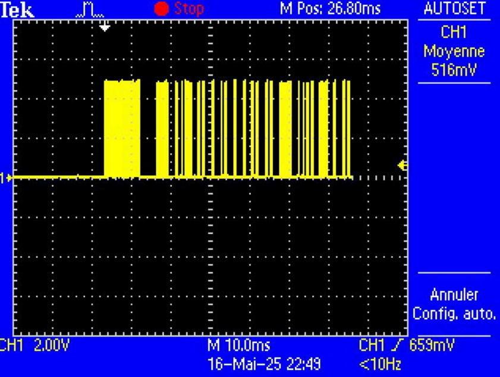
Cadre NEC envoyé
Ce que nous devons voir sur le récepteur, c'est l'inverse de cette trame NEC. Nous pouvons alors déterminer si le récepteur fonctionne correctement ou non.
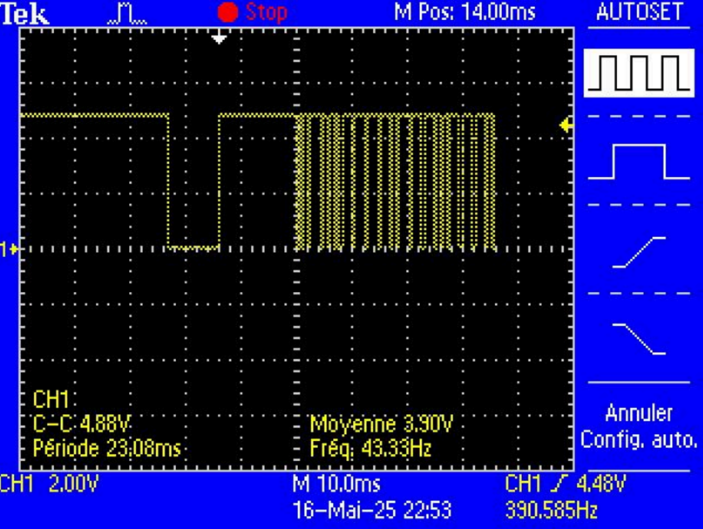
Trame reçu NEC
Comme vous pouvez le constater, le signal est en fait inversé par rapport à celui qui a été envoyé. Cela signifie que la LED du récepteur fonctionne correctement.
Deuxièmement, nous avons vérifié les moteurs : y a-t-il une génération de signal PWM à partir des valeurs calculées ? Nous avons procédé de la même manière que précédemment, mais en vérifiant uniquement le signal sur le récepteur.
Nous avons pris un fil qui nous permet d'observer les signaux sur un oscilloscope et l'avons utilisé sur la broche du microcontrôleur où nous avons connecté la broche de signal du moteur nécessaire.
Pendant le test, nous avons modifié la position du potentiomètre responsable de la vitesse/direction sur l'émetteur afin de modifier les informations envoyées au moteur.
Nous avons consulté des documents sur le comportement des servomoteurs afin de déterminer les valeurs que nous devrions trouver en fonction des positions du potentiomètre, et nous avons compris que la durée de l'état haut du signal varierait en fonction de la position du levier.
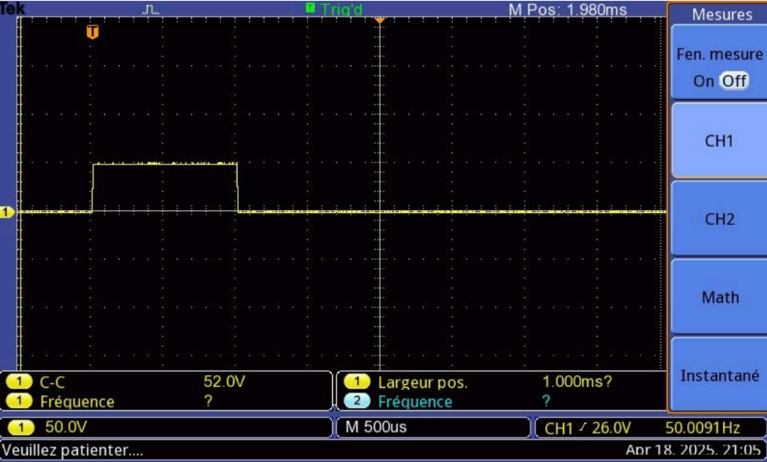
Cadre reçu avec potentiomètre de vitesse en position basse
Ici, par exemple, sur l'image ci-dessus, vous pouvez voir le signal reçu pour la vitesse (puissance) du moteur. La durée du signal était d'à peine 1 milliseconde, exactement la valeur que nous attendions d'après les documents que nous avons consultés. Ici, le potentiomètre était en position basse, ce qui signifie qu'il envoyait une valeur de vitesse de 0.
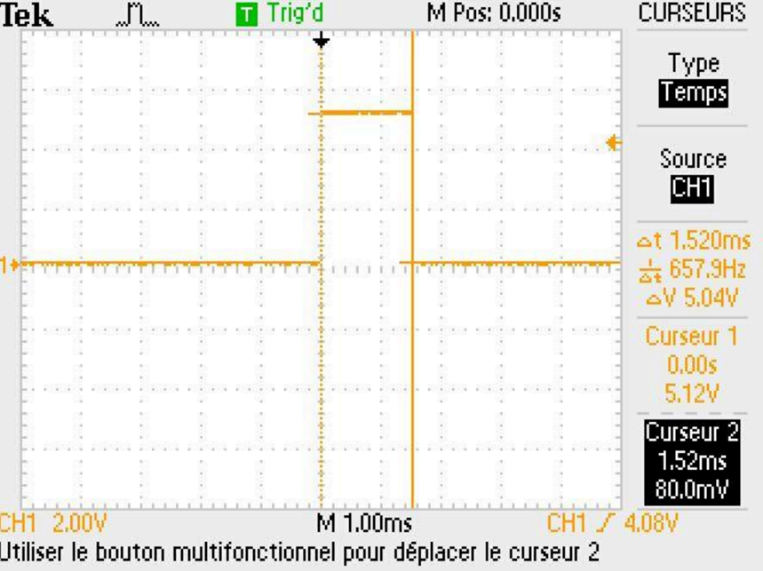
Cadre reçu avec potentiomètre de direction en position centrale
Voici un exemple de signal de potentiomètre de direction, d'une durée de 1,520 millisecondes, lorsque la position se trouve quelque part au milieu. Selon la documentation, nous devrions obtenir une valeur de 1,5 ms dans ce cas. Nous avons donc calculé l'erreur :
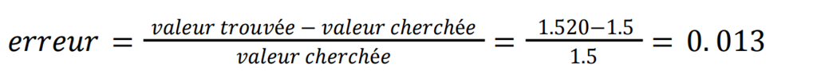
Le pourcentage d'erreur était de 1,3 %, dans la fourchette d'erreur possible de ±5 % dont nous disposions.
Ensuite, nous avons vérifié l'intensité lumineuse des LED.
Pour cela, nous avons réglé le multimètre en mode voltmètre et l'avons connecté en parallèle avec la résistance placée en série avec la LED verte ou bleue afin de mesurer sa tension.
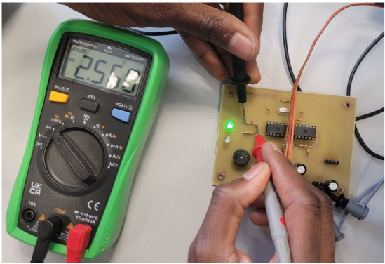
Procédure d'essai
Avant les calculs, nous avons vérifié la valeur de la résistance en éteignant la carte et en mesurant la valeur avec le multimètre en mode ohmmètre.
Pour calculer l'intensité, nous nous sommes référés à la loi d'Ohm, en calculant le courant à partir des valeurs obtenues lors du test. À partir des données de la fiche technique des LED que nous avons vérifiées, nous avons calculé les valeurs d'intensité à l'aide d'une règle de trois. Par exemple, pour la LED verte, nous avons obtenu une valeur de 79,2 mcd, ce qui était bien supérieur à la valeur requise de 50 mcd.
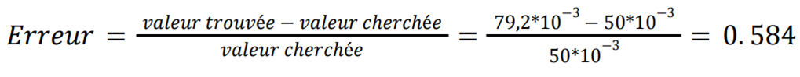
Nous avons également calculé la valeur d'erreur pour la LED verte, qui était de 58,4 %, dépassant les ±20 % requis par la tâche. Pour la LED bleue, l'erreur était de 62,4 %. Nous avons également constaté que l'équipe « Rouge » avait commis des erreurs lors des calculs pour l'assemblage des LED ainsi que lors de la rédaction du document de conception de ces pièces.
Enfin, nous avons vérifié le fonctionnement du klaxon, car il devait générer un signal carré de 4 kHz avec un rapport cyclique de 50 %. Nous avons suivi la même procédure que pour vérifier les moteurs.
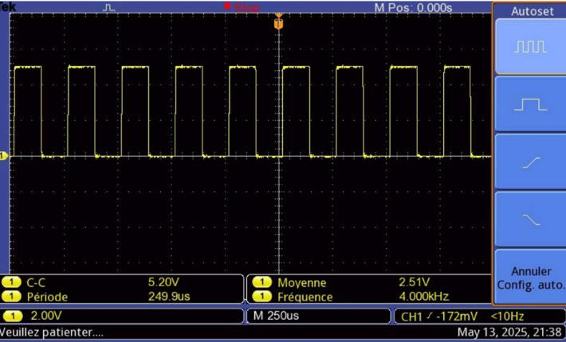
Le modèle de signal sonore
Comme vous pouvez le voir, nous avons obtenu un signal carré comme résultat, et l'oscilloscope a indiqué qu'il avait une fréquence de 4 kHz, comme demandé. Le rapport cyclique était de 50,7, ce qui se situait dans la fourchette d'erreur possible de ±10 %.
Conclusion
Au final, nous avons respecté les exigences relatives à la durée du projet, qui a été achevé avant l'expiration du délai de 60 heures. L'ensemble du projet ne répondait pas à 4 exigences, dont deux que nous avons vérifiées avec notre partenaire : les LED du récepteur.
Nous avons organisé une petite course avec des karts à hélice en utilisant les planches que nous avons conçues et fabriquées.

Récepteur dans le kart
Émetteur avec batterie intégrée
Le deuxième émetteur appartient au professeur et est utilisé lors de certains tests.
Ce projet a également mis en évidence certains domaines dans lesquels je devrais améliorer mes connaissances et mes approches des tâches à accomplir. Dans le cadre de ce projet, je n'ai pas du tout travaillé sur la partie énergie, ce qui a conduit à une réduction de mes connaissances dans ce domaine, et cela doit être corrigé.
Dans l'ensemble, ce projet très intéressant et agréable m'a permis de mettre en pratique les connaissances acquises à l'université, d'acquérir des compétences importantes et d'améliorer mon travail au sein d'une équipe plus importante composée de 8 personnes.